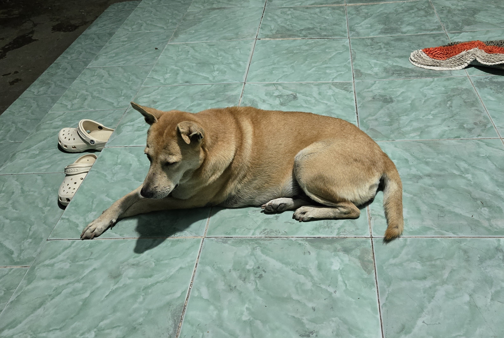

Avec des terres aussi grandes, il faut pouvoir veiller dessus tout le temps, et pour cela, qui de mieux que nos meilleurs amis ! En effet, mon grand-père à dabord adopté une chienne, Sôcôla, (chocolat, en français), qui à ensuite donné naissance à plusieurs portées, desquelles faisait partit Den (nnoir, en français), qui est aujourd'hui le deuxième chien de la famille.


Aujourd'hui, Socola à 15 ans, mais malgrés son grand âge, elle a toujours autant d'énergie à renvendre, et tout le monde l'adore. Elle est aussi très intelligente, en plus d'être belle.